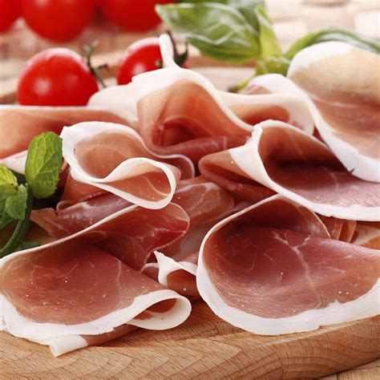

Emilia-Romagna
Panoramica
Emilia-Romagna è una regione dell’Italia settentrionale famosa per la sua ricca tradizione culinaria, città storiche, e paesaggi vari che vanno dagli Appennini alla Riviera Adriatica. Bologna, la capitale, è nota per la sua università antichissima e i suoi portici. La regione è anche il cuore della produzione automobilistica italiana, sede di marchi famosi come Ferrari, Lamborghini e Ducati.
Fatti in Breve
- Capoluogo: Bologna
- Lingua regionale: Italiano, dialetti emiliani e romagnoli
- Popolazione: ~4,5 milioni
- Famosa per: motori, arte rinascimentale
- Curiosità: L’università di Bologna, fondata nel 1088, è la più antica del mondo occidentale!
Piatti Tipici
Tagliatelle al Ragù

Tortellini

Prosciutto di Parma

Aceto Balsamico

Luoghi Famosi
Bologna

Ravenna

Modena

Parma

Ferrari Museum

Cuando Visitare
Il periodo migliore per visitare l’Emilia-Romagna è durante la primavera (aprile–giugno) e l’autunno (settembre–ottobre), anche l’estate è popolare.
Simboli Regionali
- Bandiera:
- Stemma: